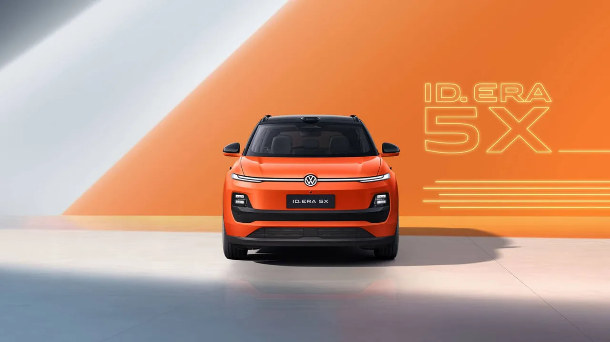
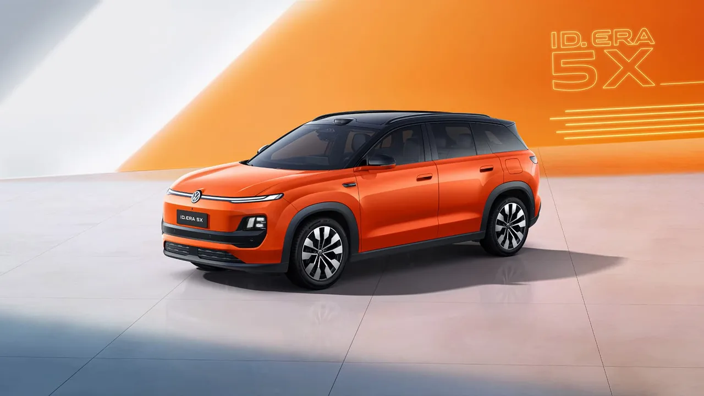
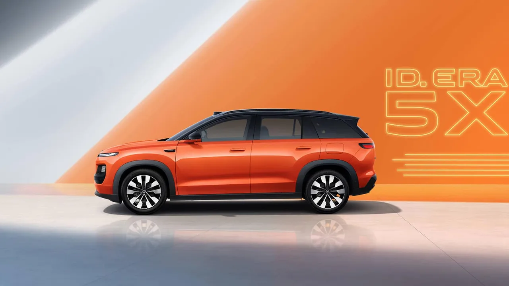

▲ 폭스바겐 ID.ERA 5X. 중국 SAIC 폭스바겐이 샤오펑과 공동 개발한 CMP 플랫폼 기반 전기 SUV다 ⓒ Volkswagen 제공
폭스바겐이 중국 전용 신형 전기 SUV 'ID.ERA 5X'를 공개했습니다. 이 차의 가장 큰 특징은 플랫폼입니다. SAIC 폭스바겐이 샤오펑과 협력해 새롭게 개발한 CMP(Compact Main Platform)를 기반으로 하며, 중국 전용 전자 아키텍처 CEA(China Electronic Architecture)를 함께 적용했습니다. 글로벌 기술을 중국에 맞게 조정하는 기존 방식에서 벗어나, 처음부터 중국 파트너와 함께 설계하는 방향으로 전략을 바꾼 셈입니다.
1. 샤오펑과 함께 만든 플랫폼, CMP
ID.ERA 5X의 핵심은 SAIC 폭스바겐과 샤오펑이 공동 개발한 CMP(Compact Main Platform)입니다. 여기에 중국 시장 전용으로 설계된 전자 아키텍처 CEA(China Electronic Architecture)가 더해졌습니다. 폭스바겐이 그동안 유럽에서 개발한 MEB 플랫폼을 중국 시장에 맞게 손보는 방식으로 대응해왔다면, 이번에는 아예 중국 파트너와 함께 플랫폼 단계부터 새로 설계하는 방향으로 전환한 것입니다. 이는 중국 소비자가 요구하는 첨단 소프트웨어·자율주행 기능 수준을 맞추는 동시에, 지역 파트너십을 통해 개발 비용을 절감하려는 현지화 전략으로 풀이됩니다.

▲ ID.ERA 5X의 정면. 컴팩트 SUV 세그먼트를 겨냥한 크기로, 지프 컴패스·마쓰다 CX-5급 경쟁 모델과 비교된다 ⓒ Volkswagen 제공
2. 155kW 모터, CATL 배터리 — 아직 베일에 싸인 주행거리
파워트레인은 유나이티드 오토모티브 일렉트로닉 시스템즈가 공급하는 155kW(211마력) 모터를 얹었습니다. 배터리는 CATL의 리튬인산철(LFP) 셀을 사용하지만, 정확한 용량과 주행거리는 아직 공개되지 않았습니다. 차체 크기는 전장 4,560mm, 전폭 1,896mm, 전고 1,630mm, 휠베이스 2,815mm로, 컴팩트 SUV 세그먼트를 정조준한 사이즈입니다. 지프 컴패스나 마쓰다 CX-5와 비슷한 체급으로, 휠은 17~19인치 옵션이 제공됩니다.
| 항목 | 내용 |
|---|---|
| 모터 출력 | 155kW(211마력) |
| 배터리 | CATL LFP(용량 미공개) |
| 전장×전폭×전고 | 4,560×1,896×1,630mm |
| 휠베이스 | 2,815mm |
| 휠 옵션 | 17~19인치 |
| 경쟁 모델급 | 지프 컴패스, 마쓰다 CX-5 |

▲ ID.ERA 5X의 후면. 라이다 센서와 '싱윈' 지능형 주행보조 시스템을 탑재해 복잡한 도심 주행 시나리오에 대응한다 ⓒ Volkswagen 제공
3. 라이다와 '싱윈' — 중국식 스마트카 문법
ID.ERA 5X는 라이다 센서를 탑재하고, 폭스바겐이 새롭게 선보이는 '싱윈(Xingyun)' 지능형 주행보조 시스템을 적용했습니다. 복잡한 도심 주행 시나리오에 대응하는 '엔드투엔드 L2++ 도심 내비게이션(NOA)' 기능도 갖췄습니다. 실내에는 인간-기계 상호작용을 강화한 '윈치(Yunqi)' 스마트 콕핏이 적용됩니다. 이런 기능들은 서구권 자동차보다 훨씬 빠르게 발전하고 있는 중국 로컬 브랜드들의 스마트카 경쟁에 맞서기 위한 대응으로 볼 수 있습니다.

▲ ID.ERA 5X의 측면 실루엣. 오렌지 컬러와 블랙 투톤 루프로 젊은 소비자층을 겨냥한 디자인 언어를 보여준다 ⓒ Volkswagen 제공
4. 왜 중국 전용일까
ID.ERA 5X는 중국 정부의 인증 서류를 통해 먼저 정보가 노출되고, 이후 공식 이미지가 뒤따라 공개되는 방식으로 알려졌습니다. 폭스바겐이 이런 중국 전용 모델을 잇달아 내놓는 배경에는, BYD·샤오펑·니오 등 중국 로컬 브랜드들의 급성장이 있습니다. 소프트웨어와 자율주행 기능에서 중국 소비자의 기대치가 유럽·미국 시장보다 훨씬 높아진 상황에서, 글로벌 공용 플랫폼만으로는 대응이 어렵다는 판단이 이런 현지 파트너십 전략으로 이어진 것으로 풀이됩니다.
5. 정리 — 폭스바겐의 생존 전략
ID.ERA 5X는 단순한 신차 한 대가 아니라, 폭스바겐이 중국 시장에서 살아남기 위해 택한 전략의 상징적인 사례입니다. 자체 기술만 고집하지 않고 현지 스타트업과 손잡아 개발 속도와 소프트웨어 경쟁력을 동시에 확보하려는 시도입니다. 정확한 가격과 주행거리, 출시 일정은 아직 공개되지 않았지만, 앞으로 공개될 후속 정보에서 폭스바겐이 중국 로컬 브랜드들과 얼마나 대등하게 경쟁할 수 있을지가 드러날 전망입니다.